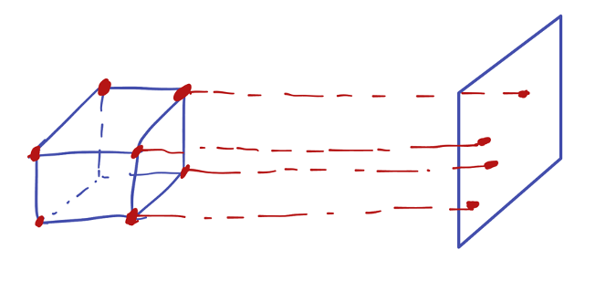
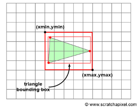
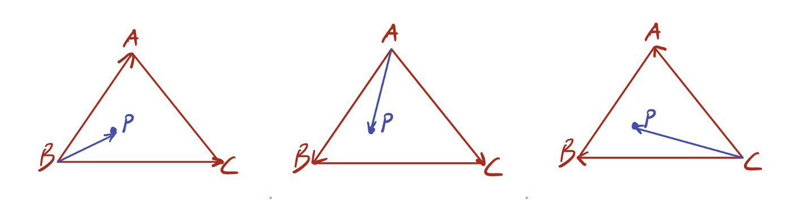
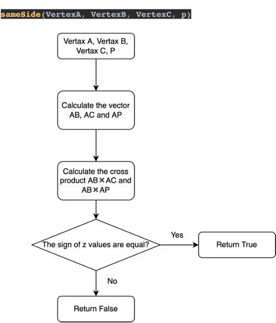
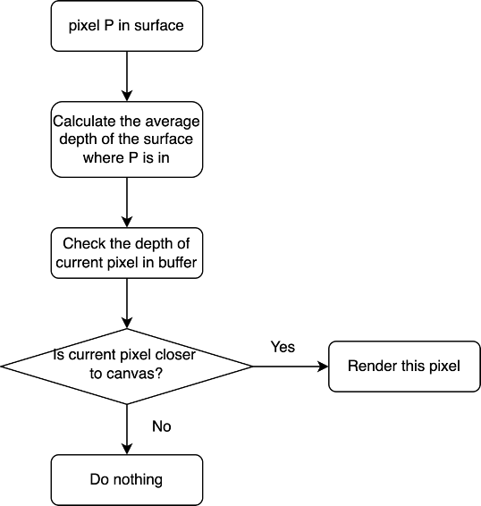
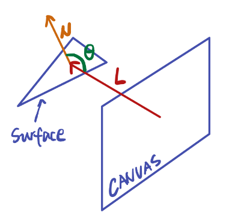

The figure above shows an example of an object file. Two classes, vertex and surface, were defined in utils.py to store the information of vertices and surfaces provided.
The vertex object contains the original coordinates of the vertex and the coordinates after each transformation. The getvector function could help calculate the vector pointing from another vertex to itself, which is useful in the following steps.
The surface object is more straightforward, which contains three vertex objects.
Also, a readFile function was defined to parse the information in the object.txt file. readFile function will return an array of vertex objects and an array of surface objects.
Mouse was used to interact with the object. The function pygame.mouse.get_rel() was used to get the relative mouse position compared to the last position sampled. This value determined the amount that the object will rotate. The rotation about X axis was controlled by the vertical movement of mouse and vice versa.More specifically,
Rotation of points in 3D space could be expressed by the multiplication of rotation matrix. The rotation matrix for rotation about X, Y and Z axis are,
$$ \mathbf{R}_x = \begin{bmatrix} 1 & 0 & 0 \\ 0 & \cos (\mathrm{\theta_x}) & -\sin (\mathrm{\theta_x}) \\ 0 & \sin (\mathrm{\theta_x}) & \cos (\mathrm{\theta_x}) \end{bmatrix}$$ $$ \mathbf{R}_y = \begin{bmatrix} \cos (\mathrm{\theta_y}) & 0 & \sin(\mathrm{\theta_y}) \\ 0 & 1 & 0 \\ -\sin(\mathrm{\theta_y}) & 0 & \cos(\mathrm{\theta_y}) \end{bmatrix}$$ $$ \mathbf{R}_z = \begin{bmatrix} \cos (\mathrm{\theta_z}) & -\sin (\mathrm{\theta_z}) & 0 \\ \sin (\mathrm{\theta_z}) & \cos (\mathrm{\theta_z}) & 0 \\ 0 & 0 & 1 \end{bmatrix} $$In this task, only rotation about X and Y axis are required.
After the position of each point was calculated, the next step was to project the points on the canvas. As the observer was at infinity, the projection line could be considered in parallel. Therefore, the x and y coordinates could be directly used. To make the object in the center of the canvas with appropriate size, the final 2D coordinates are calculated as follows,
$$x_{2D}=x_{3D}\ast100+Width/2$$ $$y_{2D}=y_{3D}\ast100+Height/2$$
After find the points on canvas, simply draw lines between vertices that defined in surface.
The object could be successfully rendered as a frame. Mouse could be used to drag the object to rotate.
In Task 2, rasterization process and depth buffer were implemented to finalize the rendering pipeline based on Task 1.
For each projected surface on canvas, traverse all pixels in the rectangular area bounded by the vertices and check whether each pixel is in the triangle. If yes, then this pixel needs to be rendered, and ignore it if not in the triangle.
To check whether a pixel P is in the triangle, we can check if vector BP and BC are on the same side of vector BA and do the same check for all three vertices as shown below. If one pixel passed all three safety check, then it is in the surface!

I defined a fuction sameSide in main.py to do this safety check process, which is illustrated in the flow char below.
In the last step, the surfaces can be successfully rendered with color. However, the surface being rendered later will overlay on the previous ones. This violates the object occlusion. Instead, the pixel that is closest to the canvas should be drawn no matter the rendering order. Therefore, one solution is to use an array to store the closest depth seen so far for each pixel (x, y) on canvas. The algorithm can be illustrated as
After implementing depth buffer, the last thing is to render different color to the surface, which is related to the orientation of the surface with respect to the light source. In this implementation, according to the assessment requirement, the light source is the observer. Therefore, when a surface is viewed on edge, it will be darker; when it is viewed flat, it will be lighter. This could be easily achieved by calculating the angle between the normal of each surface and the direction of light.
The normal of the surface could be calculated by cross product two edge vectors of the surface.
$$\vec N = \vec A \times \vec B$$Then normalize it by its length,
$$\vec N_{unit} = \frac {\vec N}{|N|}$$Assume the light vector is towards negative z direction and is a unit vector,
$$\vec L = \begin{bmatrix} 0 & 0 & -1 \end{bmatrix}$$ $$\vec N_{unit} \cdot \vec L = \cos (\theta)$$Finally, the absolute value of will be used to control the color.
